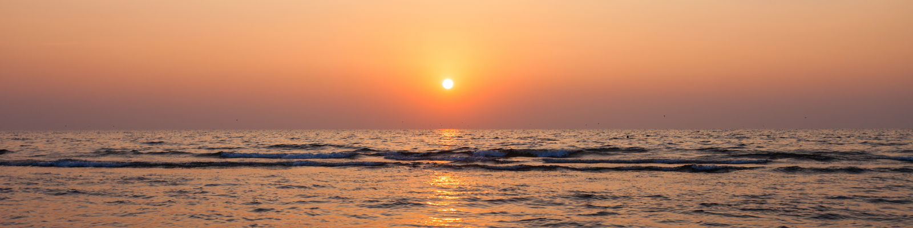

Building 'Adz' in Common Lisp With Clingon
Last updated: April 12, 2025

This passage reflects a personal journey through life and technology. The author aims to inspire others to explore their own paths, awakening to the profound possibilities that lie within their consciousness and beyond.